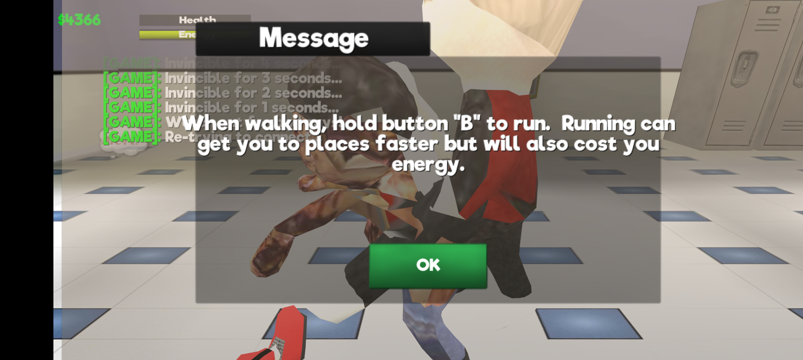
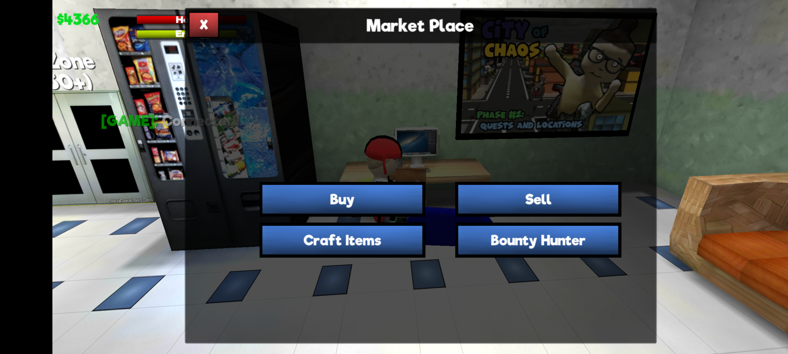

1About the game
School of Chaos Classic
(com.vnlentertainment.socclassic) is a
Unity-built, open-world school-life sim/RPG by VNL Entertainment —
walk around a schoolyard, complete quests, buy and sell at the Market
Place, and level up your character. It's built on an older Unity
engine release (2017.4 LTS), which turns out to be directly
responsible for the crash below.
2The issue
On phones with 16GB or more of RAM — Pixel 8 Pro,
Pixel 9 Pro / Pro XL, and a growing list of current-generation
flagships — the game crashes shortly after launch. It gets past the
splash screen and into the loading scene, then silently dies back to
the home screen. No error dialog, no ANR, nothing in
AndroidRuntime — it just disappears.
The crash is intermittent, which made it easy to write off as a fluke before the actual trigger was identified.
3How it happens
Every crash shows the identical pattern in logcat:
Unity : Using memoryadresses from more that 16GB of memory ActivityManager: Process com.vnlentertainment.socclassic (pid ####) has died: fg TOP Zygote : Process #### exited due to signal 11 (Segmentation fault)
That's a native segfault (SIGSEGV), not a Java
exception — there's no FATAL EXCEPTION
anywhere in the log. It happens right as the game loads its first
asset bundle, a few seconds into the loading sequence.
4Why it happens
Pulling the installed APK and inspecting libunity.so
confirms the game is built on Unity 2017.4.34f1 —
released in 2018, years before Unity properly supported large 64-bit
address spaces on Android.
The crash string sits directly next to Unity's own native memory allocator's diagnostic strings inside the binary:
Could not allocate memory: System out of memory! Trying to allocate: %zuB with %zu alignment. MemoryLabel: %s Allocation happend at: Line:%d in %s [ %s ] used: %zuB | peak: %zuB | reserved: %zuB Using memoryadresses from more that 16GB of memory
That 2017-era allocator packs its allocation bookkeeping assuming addresses stay under roughly 16GB (2³⁴). On a phone with 16GB of physical RAM, Android's ASLR (address space layout randomization) can place the app's heap above that threshold. When it does, the allocator's packed pointer representation overflows — corrupting memory — and the app segfaults almost immediately after logging that warning.
Because ASLR re-randomizes the heap location on every launch, this explains the intermittent behavior perfectly: sometimes the heap lands below the threshold and the game runs fine, sometimes it doesn't and it crashes instantly.
5The fix
This project ships a Zygisk module that hooks into
the game's process before it starts (via the
preAppSpecialize callback, which runs
with elevated privilege prior to the app being sandboxed) and calls:
personality(ADDR_NO_RANDOMIZE);
...scoped to com.vnlentertainment.socclassic
only. This disables address randomization for that process alone,
keeping its heap addresses low and stable, which avoids the overflow
entirely. No other app on the device is affected.
| Condition | Launches | Result |
|---|---|---|
| ASLR enabled (no fix) | Repeated launches | Crashed reliably |
| ASLR disabled (fix active) | 10 consecutive launches | 0 crashes |
This is a device-side workaround, not a patch to the game itself — a permanent fix requires the developers to update their Unity engine version. The full write-up addressed to the developers, with supporting evidence, is in the crash report in the repo.


6Requirements
- Root access is mandatory. This is not an APK patch or a mod — it's a system-level module that runs inside the Android OS itself.
- A Zygisk-compatible root solution, such as Magisk with Zygisk enabled, or KernelSU / KernelSU-Next with a Zygisk implementation (Zygisk Next, ReZygisk, etc.)
- Without one of the above, this module cannot be installed and will not do anything.
7Installation
- Download
socfix_module.zipfrom the latest release. - Install it via your root manager app's "install module from storage" option, or from a root shell:
ksud module install socfix_module.zip
- Reboot your device. Zygisk modules only take effect after a reboot, since they hook into the
zygoteprocess at boot time. - Launch the game as normal.
8Tested on
| Device | Google Pixel 9 Pro XL |
| RAM | 16GB |
| Android version | 17 (build CP31.260618.005) |
| Root | KernelSU-Next + Zygisk implementation (classic Zygisk module ABI) |
| Game version | 1.822 (build cea6b550-3db9-4510-864b-a1c2a0089fa7) |
| Result | 10/10 successful launches with the fix active |
It should work on any Zygisk-capable rooted device with 16GB+ RAM hitting the same crash, since the fix targets the app's process directly rather than anything device-specific — but it has only been verified on the configuration above.